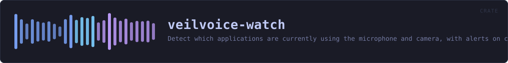

veilvoice-watch
Detect which applications are currently using the microphone and camera, with alerts on change.
reference · the same page on GitHub
Find out which applications are using your microphone and camera, right now.
Why this belongs in a voice-privacy tool
VeilVoice protects the audio you choose to send. This answers a different and more basic question: is something listening that you did not choose? A de-identified voice on a call is worth very little if a second program is recording the raw microphone at the same time.
Operating systems have grown indicators for this, the orange dot and the taskbar icon, but they are small, easily missed, and tell you only that something is active, rarely what. This reports the process, its PID and how long it has held the device.
What it can actually see, per platform
Detection is honest about its limits, because a monitor that quietly sees nothing is worse than no monitor at all, because it produces false confidence. support reports what the current platform can do before you rely on it.
| Platform | Microphone | Camera | How | |---|---|---|---| | Windows | ✅ | ✅ | The same CapabilityAccessManager records the OS privacy indicator uses | | Linux | ✅ | ✅ | /proc/*/fd handles open on /dev/snd/pcm* and /dev/video* | | macOS | ❌ | ❌ | No public API exposes it; anything claiming otherwise on macOS is guessing |
On Linux you see every process you have permission to inspect. Without root that means your own; other users' processes are invisible, and that is a kernel permission boundary rather than something this crate can work around.
In plain words
This tells you when something is using your microphone or camera.
Not what it is doing with them -- just that a program has them open, and which program. That is worth knowing before you start talking, and it is the kind of thing an operating system knows and does not always show you.
It cannot see everything. Some ways of getting at a microphone do not go past the place this reads.
HOW THE CRATE FITS TOGETHER
Every arrow is a crate:: or super:: path one module actually uses, read out of the source rather than drawn by hand.
The same graph as Mermaid source
%%{init: {"theme":"base","themeVariables":{"background":"#1a1b26","primaryColor":"#1f2335","primaryTextColor":"#c0caf5","primaryBorderColor":"#7aa2f7","secondaryColor":"#16161e","tertiaryColor":"#16161e","lineColor":"#737aa2","textColor":"#c0caf5","mainBkg":"#1f2335","nodeBorder":"#7aa2f7","clusterBkg":"#16161e","clusterBorder":"#2f3549","fontFamily":"ui-monospace, SFMono-Regular, Consolas, monospace","fontSize":"14px"}}}%%
flowchart TD
n_lib(["lib.rs<br/>412 lines"])
n_linux["linux.rs<br/>201 lines"]
n_windows["windows.rs<br/>606 lines"]
click n_lib href "https://github.com/tilas01/veilvoice/blob/main/crates/veilvoice-watch/src/lib.rs" "open the source"
click n_linux href "https://github.com/tilas01/veilvoice/blob/main/crates/veilvoice-watch/src/linux.rs" "open the source"
click n_windows href "https://github.com/tilas01/veilvoice/blob/main/crates/veilvoice-watch/src/windows.rs" "open the source"This site loads no third-party script, so it cannot run Mermaid; the diagram above is the same nodes and edges drawn by the generator instead. GitHub renders the source below directly.
THE FILES
| File | Lines | What it is |
|---|---|---|
lib.rs | 412 | Find out which applications are using your microphone and camera, right now. |
linux.rs | 201 | Linux detection, via open file handles in /proc. |
windows.rs | 606 | Windows detection, via the Capability Access Manager. |
scan_once.rs | 30 | Print what is using the microphone and camera right now. |